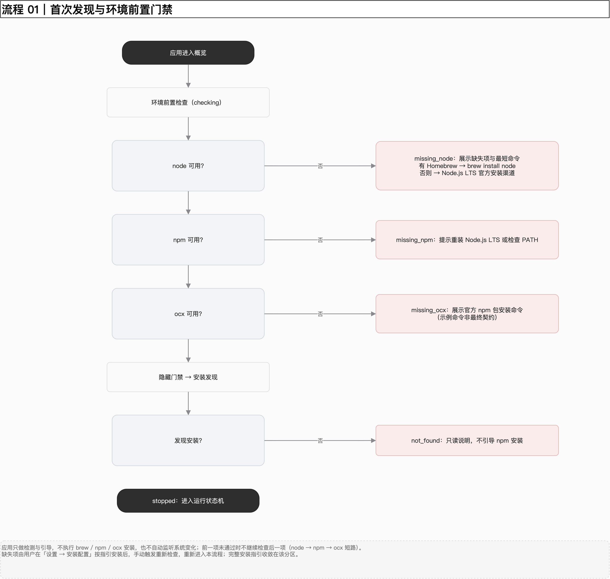
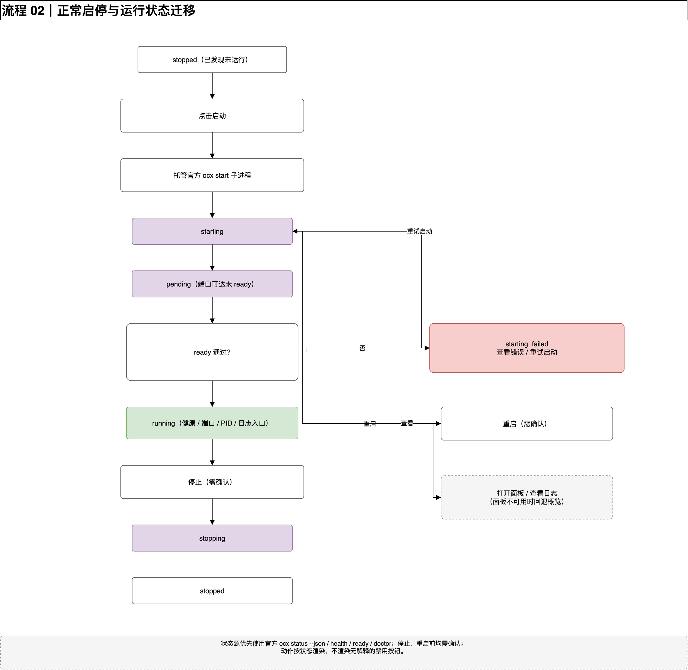
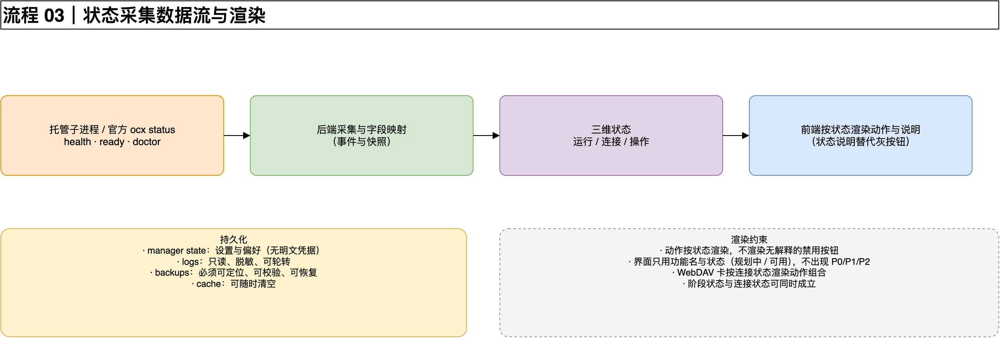
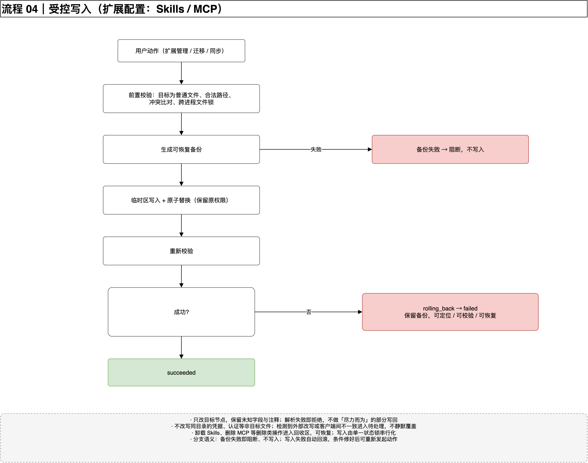
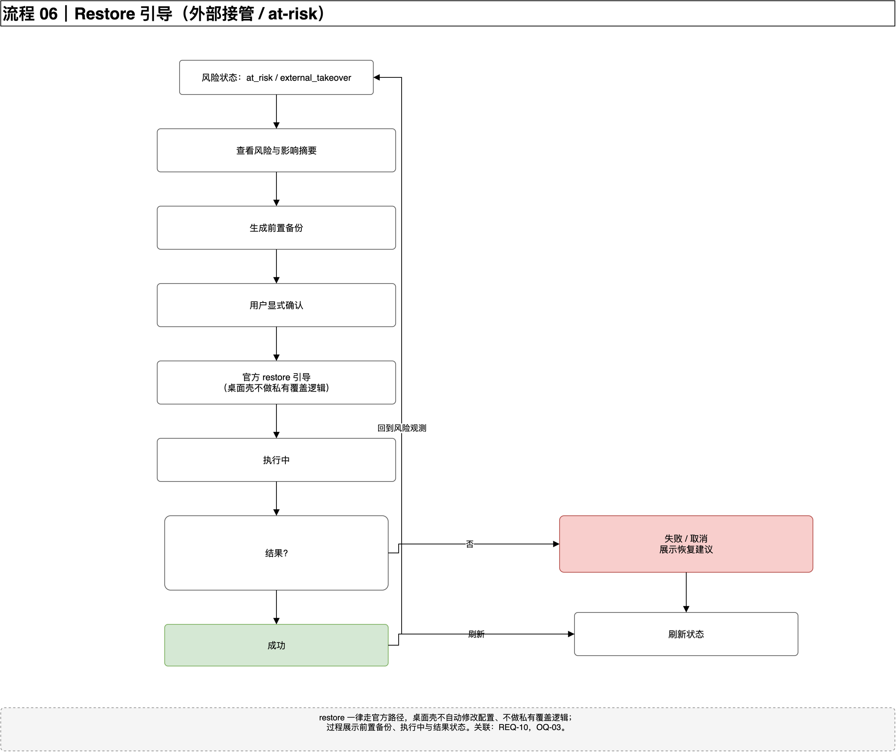
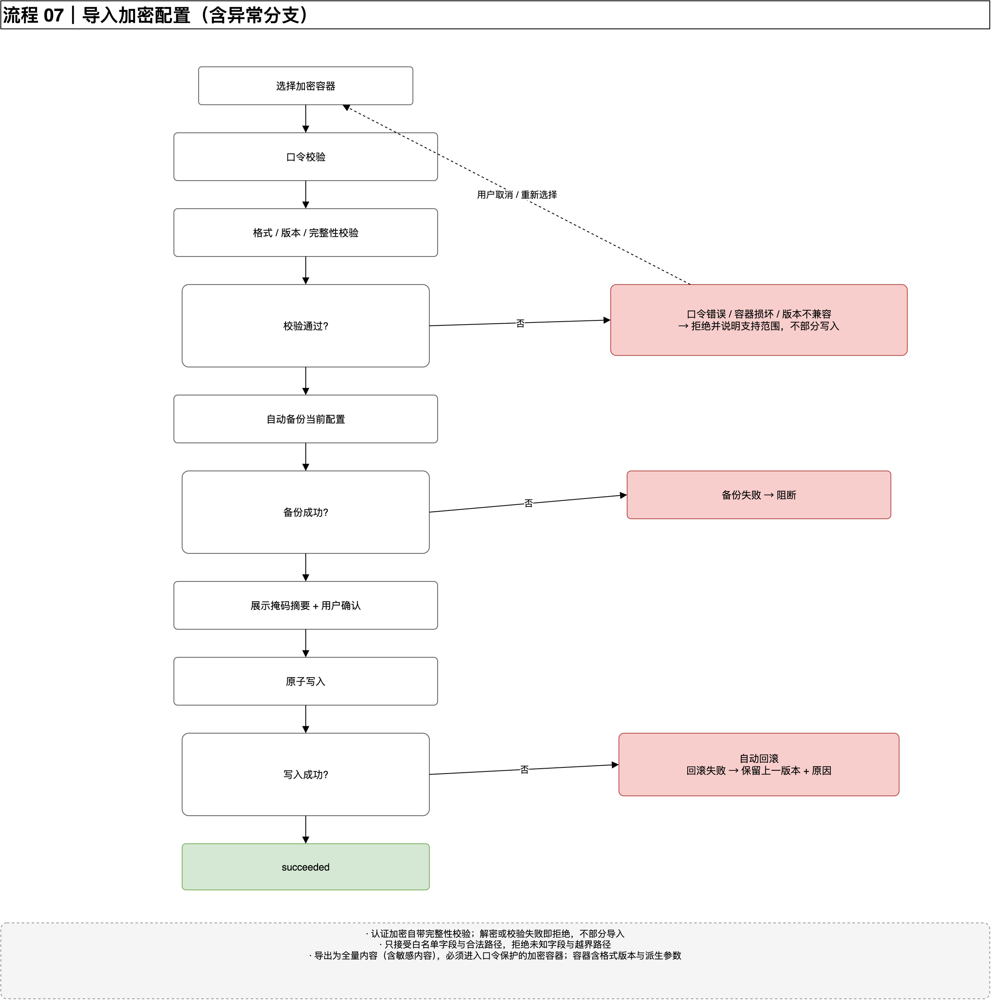
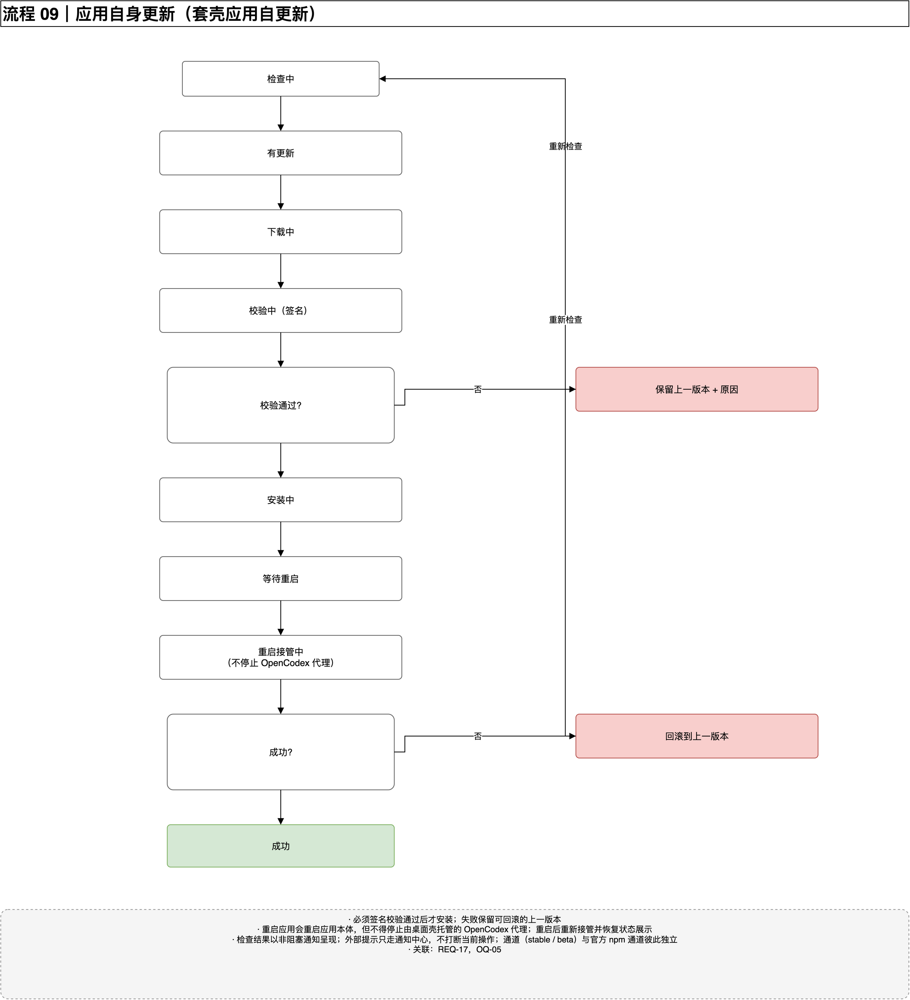
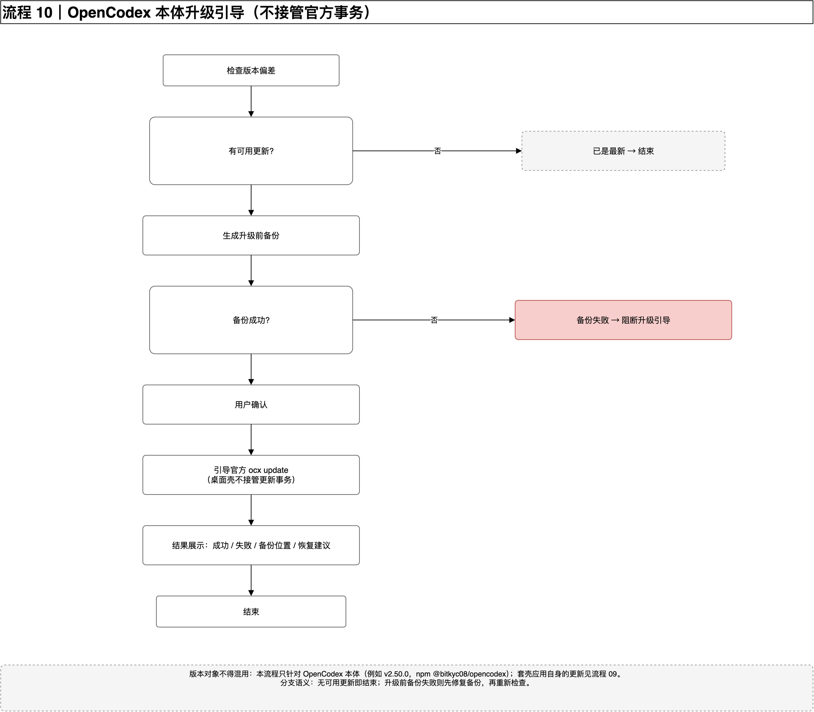

10 张关键流程
挑的都是有分支、有失败、有回滚的地方。图上所有连线只有横竖两个方向、单条直线段，不穿节点，可以直接照着读。需要回环的关系（比如失败后重试）写在图下方的注释里，不画折线。
先把这 10 张的名字记住
01 首次发现与前置门禁
node → npm → ocx 短路检查，缺什么给什么命令。
02 正常启停
未运行 → 启动中 → 待就绪 → 运行中；失败、停止、重启各自成支。
03 状态采集数据流
官方状态源 → 后端映射 → 三维状态 → 前端渲染。
04 受控写入
校验 → 备份 → 原子替换 → 重新校验 → 成功或回滚。
05 数据目录切换
引用优先、迁移可选；检查不过就阻断，迁移失败自动回滚。
06 Restore 引导
看风险 → 备份 → 用户确认 → 走官方 restore → 刷新状态。
07 导入配置
口令、完整性、版本三重校验；失败一律拒绝，不做部分写入。
08 WebDAV 同步
客户端加密 → 清单比对 → 有冲突先入待处理，不静默覆盖。
09 应用自身更新
下载 → 签名校验 → 安装 → 重启接管；失败保留上一版本。
10 官方升级引导
升级前必须备份成功，再引导官方 ocx update。
首次发现与前置门禁
应用一开始就检查环境。顺序固定为 node → npm → ocx，前面一项没过不查后面一项。缺什么给什么命令，有 Homebrew 给 brew install node，没有就给官方 LTS 渠道。

正常启停
状态从「已发现未运行」走到「运行中」，中间要经过启动中和待就绪。停止和重启都要先确认，并且说明后果。

状态采集数据流
后端从托管子进程和官方状态命令取数，映射成三维状态，前端据此决定显示哪些动作。

ocx status --json / health / ready / doctor。受控写入（扩展配置）
这是唯一允许写真实文件的路径。顺序不能变：先校验目标和冲突，再备份，然后临时区写入加原子替换，最后重新校验。

数据目录切换
默认「引用」已有位置，不搬数据；只有你显式选「迁移」才会移动。检查阶段就阻断不可写、空间不足、结构异常这三种情况。

Restore 引导
检测到外部 provider 接管或 startup at-risk 时，先解释影响，不动手改配置。用户显式确认后才走官方 restore。

导入配置
异常分支最多的一张：口令错误、容器损坏、版本不兼容、备份失败、写入失败、自动回滚、回滚失败、用户取消，都要有明确出路。

WebDAV 同步
远端一律视为不可信，上传前在客户端加密。采用冷同步，覆盖前生成可恢复备份，检测到冲突先入待处理。

应用自身更新
套壳应用自己的更新链：检查 → 下载 → 签名校验 → 安装 → 重启接管。每一步都有失败出路。

官方升级引导
这条线针对 OpenCodex 本体（比如 v2.50.0），和上一条是两回事。桌面壳不接管更新事务，只做升级前备份和引导。
